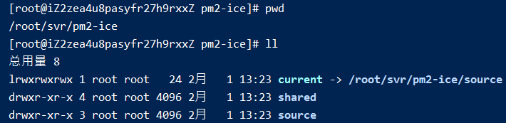
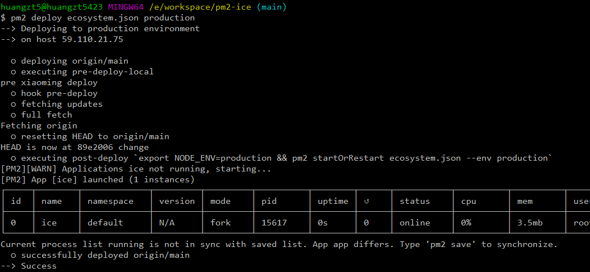

003-pm2一键发布项目
1 常规启动
编写node项目，新建
server.js文件const http = require('http'); // 这里要写为`0.0.0.0`不能写`127.0.0.1`否则不发访问 const hostname = '0.0.0.0'; const port = 7001; const server = http.createServer((req, res) => { res.statusCode = 200; res.setHeader('Content-Type', 'text/plain'); res.end('Hello World'); }); server.listen(port, hostname, () => { console.log(`server is running at http://${hostname}:${port}`) });通过pm2启动项目
pm2 start ./app.js访问
http://59.110.21.75:7001/成功
2 pm2自动部署
到github创建一个仓库
pm2-ice，后面阿里云将从这个仓库clone代码在项目根目录编写ecosystem.json，内容如下:
{ "apps": [{ "name": "ice", "script": "server.js", "env": { "COMMON_VARIABLE": "true" }, "env_production": { "NODE_ENV": "production" } }], "deploy": { "production": { "user": "root", "host": ["59.110.21.75"], "port": "22", "ref": "origin/main", "repo": "git@github.com:zettle/pm2-ice.git", "path": "/root/svr/pm2-ice", "ssh_options": "StrictHostKeyChecking=no", "pre-deploy-local": "echo 'pre xiaoming deploy'", "env": { "NODE_ENV": "production" } } } }
- 首次部署
把代码push代码到github上，并在win上启动git bash，执行部署命令
pm2 deploy ecosystem.json production setup
window系统需要在
git bash上，因为需要用到ssh服务
阿里云上需要安装git服务，因为会通过
git clone拉取代码
这样阿里云就会通过git去指定仓库拉取代码进行首次部署
回到阿里云上可以看到项目结构已经创建好

- 再次部署
在win本地执行部署命令
pm2 deploy ecosystem.json production

即部署完成
- 每次修改完代码部署
每次改完代码，要push到远程仓库，然后执行
pm2 deploy ecosystem.json production即可
centos默认git版本是1.8.3.1，这个版本会造成执行完命令后，阿里云没有更新到最新代码的情况，【解决方法: 升级git版本二】
如果按照上面安装好git，但是执行
pm2 deploy还是一直提示bash: git: command not found。可以执行下面命令创建软连接
# /usr/local/git/bin/ 为我们安装git的目录
# /usr/bin/ 为全局命令的目录
# 把我们的git命令创建一个软连接，存到 `/usr/bin` 目录里
ln -s /usr/local/git/bin/git /usr/bin/git